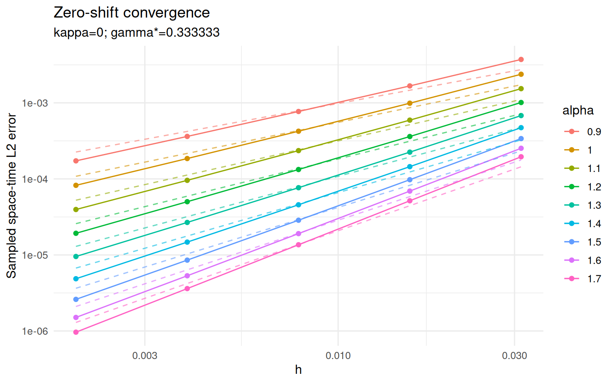
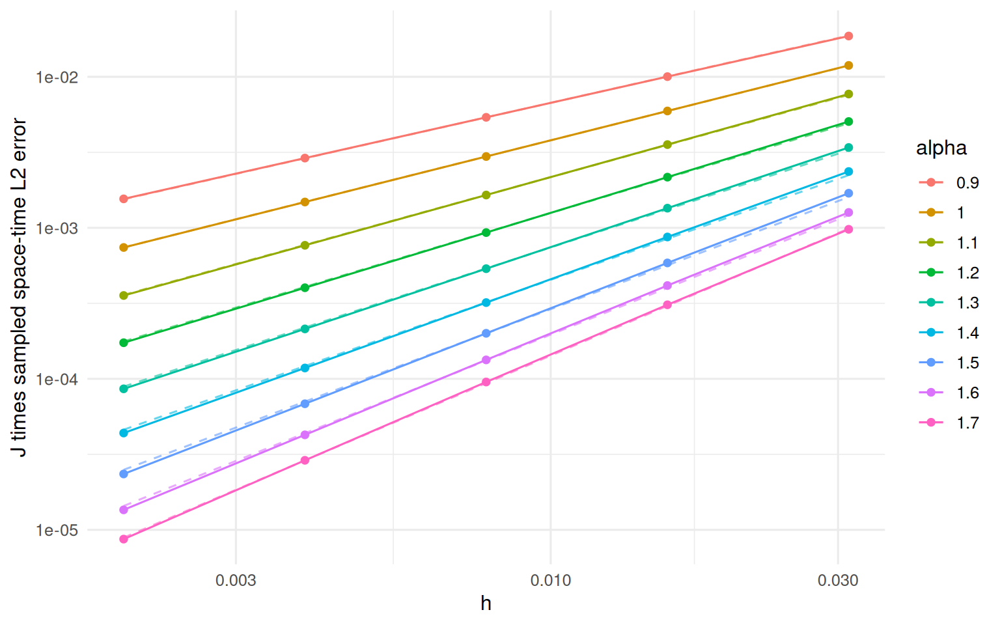

Zero-shift theory · m · h · tau · rough_h · Benchmark
This is a parallel experiment using the zero-shift construction in
kappa0func.Rmd. It leaves the original four positive-shift
notebooks unchanged. The equation is \[
u_t+\nu(-\Delta_\Gamma)^{\alpha/2}u=f,\qquad\kappa=0,
\] on the connected tadpole with stem length 1 and loop length 2,
with continuity and Kirchhoff conditions. The fixed geometric gap scale
is \(\gamma_*=2/(3\cdot2)=1/3\). It is
independent of \(h\) and \(\tau\) and introduces no reaction or decay
of the constant mode.
The aim is to carry out the smooth and rough convergence studies in
main.tex, Section “Numerical experiments”, for the
unshifted operator. The zero-shift treatment follows
eq:gamma-scale, eq:discrete-means,
eq:rational-centered-scheme, and
thenumericalscheme in
Numerical_fractional_diffusion_IMAJNA_kappa0.tex. Both
manuscripts are in
/home/rierasl/Desktop/6ac76d140751a76e98ae4d0b.
The necessary operator changes are \(L=G\), an exact zero constant eigenvalue, a
positive normalization scale \(\gamma_*=1/3\) in place of \(\kappa^2\), and the separate mean update.
The convergence data retain their zero mean; no constants are added to
the initial condition or forcing. The separate nonzero-mean benchmark in
the revised paper is a different experiment and is not substituted for
these convergence studies. Meshes, time grids, error norms, and
approximation orders are explicit below; numerical parameter adjustments
must be justified by zero-shift error-budget checks. Internal
diagnostics belong to DOCS/NAP, outside this report.
The computed zero-shift errors and slopes are new results for the
unshifted equation. They are not expected to equal the positive-shift
numbers in main.tex, because the modal rates change from
\(\nu(\mu_j+16)^{\alpha/2}\) to \(\nu\mu_j^{\alpha/2}\).
This notebook follows the original experiment workflow. All full-run parameters are explicit in the parameter chunk below. There are no validation profiles or global options that select a different experiment.
true_diff_cov_in_h_rough_as_in_mat_paper.rds.Use the R installation containing rSPDE,
Matrix, Rcpp, and RcppEigen for
computation (for example /usr/bin/Rscript). Knitting needs
the reporting packages only. Internal implementation tests and
refinement studies are kept separately in
/home/rierasl/Desktop/DOCS/NAP/true_diff_internal.
knitr::opts_chunk$set(message=FALSE,warning=TRUE,error=FALSE,cache=FALSE,
dev="png",fig.width=8,fig.height=5)
if (!requireNamespace("ggplot2",quietly=TRUE)) stop("Install ggplot2 to render the plots.")These are the full experiment settings. Edit them here before running
the computation. workers controls execution only; it does
not change the mathematical problem. The _paper filename
suffix is retained for compatibility with previously generated full-run
results.
T_final <- 1
kappa <- 0
gamma_star <- 1/3
alpha_vector <- seq(0.9,1.7,0.1)
diffusion <- 1
J_vector <- 5:9
time_step <- 8e-7
m_fixed <- 14L
reference_cutoff <- 16L
reference_J <- 18L
reference_time_step <- 1e-5
max_tail_squared_fraction <- 0.002
workers <- 9L
output_file <- "data_files/true_diff_cov_in_h_rough_as_in_mat_paper.rds"
# Bundle only the visible parameters above for the shared runner.
settings <- list(study="rough_h",T_final=T_final,kappa=kappa,gamma_star=gamma_star,
alpha=alpha_vector,diffusion=diffusion,workers=workers,J=J_vector,tau=time_step,m=m_fixed,
cutoff=reference_cutoff,reference_J=reference_J,reference_tau=reference_time_step,
max_tail_squared_fraction=max_tail_squared_fraction)
settings_table <- data.frame(parameter=names(settings),
value=vapply(settings,function(x) paste(x,collapse=", "),character(1)))
knitr::kable(settings_table)| parameter | value | |
|---|---|---|
| study | study | rough_h |
| T_final | T_final | 1 |
| kappa | kappa | 0 |
| gamma_star | gamma_star | 0.333333333333333 |
| alpha | alpha | 0.9, 1, 1.1, 1.2, 1.3, 1.4, 1.5, 1.6, 1.7 |
| diffusion | diffusion | 1 |
| workers | workers | 9 |
| J | J | 5, 6, 7, 8, 9 |
| tau | tau | 8e-07 |
| m | m | 14 |
| cutoff | cutoff | 16 |
| reference_J | reference_J | 18 |
| reference_tau | reference_tau | 1e-05 |
| max_tail_squared_fraction | max_tail_squared_fraction | 0.002 |
Keep exactly the original rough data: \[ u_0=0,\qquad f=g=\sum_{j\ge1}j^{-1}\phi_j,\qquad \phi_j=0\text{ on the stem},\quad \phi_j(x)=\sin(2^j\pi x)\text{ on the loop }[0,2]. \] These are orthonormal Kirchhoff eigenfunctions with eigenvalues \(\mu_j=\pi^2 2^{2j}\). Thus \(g\in L_2\) but has no positive spectral Sobolev regularity. Each mode has zero spatial mean, so the full solution has zero mass for all time. With \(a_j=\nu(\pi2^j)^\alpha\), \[ u_K(s,t)=\sum_{j=1}^K b_j(t)\phi_j(s),\qquad b_j(t)=\frac{1-e^{-a_jt}}{j a_j}. \] A fixed cutoff is used for every solver mesh, and is not added to the measured error as a separate positive term.
On \(h=2^{-J}\) aligned meshes, the sine-hat loads for \(j\ge J\) vanish analytically, including the two endpoint half-hats at the junction. The infinite forcing therefore has the exact finite FEM load \(\sum_{j=1}^{J-1}j^{-1}(\phi_j,\psi_i)\). The implementation evaluates these retained integrals analytically; it does not obtain the rough load by sampling an underresolved series.
As in the original rough notebook, solve only on \([0,1/2]\) with zero endpoint values and extend by odd reflection and period one around the loop; the stem remains zero. For example, the value on \((1/2,1)\) is minus the reflected value on \((0,1/2)\). The full loop has four copies, so the reduced matrices are four times the interval matrices. Their mass norm equals the full-graph norm. This is an invariant FEM subspace, not a truncation to discrete eigenfunctions.
No constant vector belongs to this restricted space. The shifted
sparse matrices are \(G_{\rm
red}/\gamma_*-z_nC_{\rm red}\), with the same \(\gamma_*=1/3\) and source-table logic as
the full-space solver. kappa0_rough_operator() constructs
them; the compiled kernel uses split_mean=FALSE.
Subtracting a quarter-interval mean would change the problem. Zero
full-graph mean follows exactly from the antisymmetric
extension. The implementation check compares a reduced run with the full
connected tadpole and its integrated mass.
Require \(K\ge\max J\) so every
mesh’s first unresolved mode remains in the reference, and
reference_J >= K+2 to resolve the retained sines. The
reference is sampled on the same reduced physical interval, with the
same factor-four mass matrix and right-endpoint time sum as in the
original study. The same compressed sampled-error identity is used. All
backward Euler steps are advanced, including those between reference
times. See Section 10 of kappa0func.Rmd for the shared
implementation.
The omitted reference tail satisfies \[ \|u-u_K\|_{L_2(0,T;L_2)}^2\le B_K= \frac{T}{\nu^2\pi^{2\alpha}} \frac{2^{-2\alpha(K+1)}}{(K+1)^2(1-2^{-2\alpha})}. \] The code requires \(B_K/E^2\le0.002\) at every measured error. This checks truncation only; it does not certify reference mesh or time quadrature. The unresolved-mode tail and the resolved-mode FEM error suggest \(E_h\asymp h^\alpha/J\) for fixed \(0<\alpha<2\), provided temporal and rational errors are sufficiently small. Show raw errors and raw slopes, then fit \(\log(JE_h)=s_h\log h+b\) against the reference slope \(\alpha\). Multiplying by \(J\) removes the predicted logarithmic factor; it does not subtract an error contribution or modify the computed PDE.
The full experiment retains \(J=5:9\), \(K=16\), reference_J=18, \(\tau=8\cdot10^{-7}\), \(\tau_\star=10^{-5}\), \(m=14\), \(\nu=1\).
Run this chunk manually after the setup and parameters.
eval=FALSE prevents it from running when knitting. This
explicit action computes the experiment and overwrites only the named
full-run result file. It does not run internal implementation tests or
refinement studies.
for (package in c("Matrix","rSPDE","Rcpp","RcppEigen"))
if (!requireNamespace(package,quietly=TRUE)) stop("Missing package: ",package)
true_diff <- local({
extracted <- tempfile("true_diff_functions_",fileext=".R")
on.exit(unlink(extracted),add=TRUE)
knitr::purl("kappa0func.Rmd",output=extracted,quiet=TRUE,documentation=0L)
functions <- new.env(parent=globalenv())
sys.source(extracted,envir=functions)
functions
})
result <- true_diff$kappa0_compute_study(settings,"true_diff_cov_in_h_rough_as_in_mat.Rmd",output_file)This is the only experiment-data action taken while knitting. Check the saved scientific parameters against the visible settings. A worker-count change does not invalidate numerical results. Historical internal-check fields, if present in an older result, are not executed or displayed. Source hashes and package versions are retained as provenance; source changes do not silently launch another computation.
if (!file.exists(output_file))
stop("Saved results are missing: ",output_file,
". Run the setup, parameters, and recompute chunks manually, then knit.")
result <- readRDS(output_file)
scientific_parameters <- setdiff(names(settings),"workers")
mismatch <- scientific_parameters[!vapply(scientific_parameters,function(name)
isTRUE(all.equal(result$parameters[[name]],settings[[name]],tolerance=1e-12)),logical(1))]
if (length(mismatch))
stop("Saved settings differ for: ",paste(mismatch,collapse=", "),
". Run the recompute chunk manually for these parameters, then knit.")
cat("Generated:",result$generated_at,"\nSaved computation seconds:",
round(result$elapsed_seconds,2),"\nSaved worker count:",result$parameters$workers,"\n")## Generated: 2026-11-22 12:15:23 +03
## Saved computation seconds: 186.72
## Saved worker count: 9The benchmark slopes describe the theoretical rate scale. The
observed fits use the computed data below; they are not replaced by the
benchmark. For smooth data, max_mass_error is the maximum
absolute discrepancy from the discrete mass recurrence over the entire
trajectory. For the rough reduction the full-graph mass is zero by
symmetry, validated independently.
knitr::kable(result$rates,digits=6)| alpha | reference | raw | observed |
|---|---|---|---|
| 0.9 | 0.9 | 1.106722 | 0.895619 |
| 1.0 | 1.0 | 1.212322 | 1.001219 |
| 1.1 | 1.1 | 1.318994 | 1.107890 |
| 1.2 | 1.2 | 1.427591 | 1.216488 |
| 1.3 | 1.3 | 1.538412 | 1.327309 |
| 1.4 | 1.4 | 1.649731 | 1.438627 |
| 1.5 | 1.5 | 1.756083 | 1.544980 |
| 1.6 | 1.6 | 1.848148 | 1.637045 |
| 1.7 | 1.7 | 1.916257 | 1.705154 |
d <- result$results
d$alpha_label <- factor(d$alpha,levels=settings$alpha)
if (settings$study=="m") {
p <- ggplot2::ggplot(d,ggplot2::aes(sqrt(m),error,colour=alpha_label,group=alpha_label))+
ggplot2::geom_line()+ggplot2::geom_point(ggplot2::aes(shape=resolved))+
ggplot2::scale_y_log10()+ggplot2::labs(x="sqrt(m)",y="Isolated space-time L2 error",
colour="alpha",shape="Resolved",title="Zero-shift rational convergence")
} else {
p <- ggplot2::ggplot(d,ggplot2::aes(axis,error,colour=alpha_label,group=alpha_label))+
ggplot2::geom_line()+ggplot2::geom_point()+ggplot2::scale_x_log10()+
ggplot2::scale_y_log10()+ggplot2::labs(x=if(settings$study=="tau") "tau" else "h",
y="Sampled space-time L2 error",colour="alpha",title="Zero-shift convergence")
}
# Reference curves retain their prescribed slope and are geometrically
# anchored to the data. They are guides, not additional computed errors.
guides <- do.call(rbind,lapply(settings$alpha,function(a) {
x <- d[d$alpha==a,]
power <- if(settings$study=="m") -2*pi*sqrt(a/2) else if(settings$study=="tau") 1 else 2
xx <- if(settings$study=="m") sqrt(x$m) else log(x$axis)
if(settings$study=="rough_h") power <- a
x$guide <- exp(mean(log(x$error)-power*xx)+power*xx)
x
}))
guides$alpha_label <- factor(guides$alpha,levels=settings$alpha)
p <- p+ggplot2::geom_line(data=guides,ggplot2::aes(y=guide),linetype="dashed",alpha=0.6)+
ggplot2::theme_minimal(base_size=12)+ggplot2::labs(subtitle=sprintf("kappa=0; gamma*=%g",settings$gamma_star))
print(p)
figure_dir <- "data_files/true_diff_cov_in_h_rough_as_in_mat_paper"
dir.create(figure_dir,recursive=TRUE,showWarnings=FALSE)
ggplot2::ggsave(file.path(figure_dir,"convergence.pdf"),p,width=8,height=5)The raw-error plot above includes h-to-the-alpha guides for context;
the theoretical logarithmic correction is assessed in this second plot.
The corrected slopes are the observed column of the rate
table.
corrected_plot <- ggplot2::ggplot(d,ggplot2::aes(axis,corrected_error,colour=alpha_label))+
ggplot2::geom_line()+ggplot2::geom_point()+ggplot2::scale_x_log10()+ggplot2::scale_y_log10()+
ggplot2::labs(x="h",y="J times sampled space-time L2 error",colour="alpha")+
ggplot2::theme_minimal(base_size=12)
corrected_guides <- do.call(rbind,lapply(settings$alpha,function(a) {
x <- d[d$alpha==a,]; x$guide <- exp(mean(log(x$corrected_error)-a*log(x$axis)))*x$axis^a; x
}))
corrected_plot <- corrected_plot+ggplot2::geom_line(data=corrected_guides,
ggplot2::aes(y=guide),linetype="dashed",alpha=0.6)
print(corrected_plot)
ggplot2::ggsave(file.path(figure_dir,"corrected_convergence.pdf"),corrected_plot,width=8,height=5)
cat("Largest squared-tail fraction:",max(d$tail_squared_fraction),"\n")## Largest squared-tail fraction: 1.272736e-05knitr::kable(result$results,digits=12)| alpha | axis | J | error | corrected_error | cutoff_squared_bound | tail_squared_fraction | steps | unknowns | mass_by_antisymmetry |
|---|---|---|---|---|---|---|---|---|---|
| 0.9 | 0.031250000 | 5 | 3.724868e-03 | 1.862434e-02 | 0 | 2.738500e-08 | 1250000 | 15 | 0 |
| 0.9 | 0.015625000 | 6 | 1.671309e-03 | 1.002786e-02 | 0 | 1.360250e-07 | 1250000 | 31 | 0 |
| 0.9 | 0.007812500 | 7 | 7.701704e-04 | 5.391193e-03 | 0 | 6.405570e-07 | 1250000 | 63 | 0 |
| 0.9 | 0.003906250 | 8 | 3.620098e-04 | 2.896079e-03 | 0 | 2.899283e-06 | 1250000 | 127 | 0 |
| 0.9 | 0.001953125 | 9 | 1.727812e-04 | 1.555031e-03 | 0 | 1.272736e-05 | 1250000 | 255 | 0 |
| 1.0 | 0.031250000 | 5 | 2.379172e-03 | 1.189586e-02 | 0 | 4.807000e-09 | 1250000 | 15 | 0 |
| 1.0 | 0.015625000 | 6 | 9.898075e-04 | 5.938845e-03 | 0 | 2.777300e-08 | 1250000 | 31 | 0 |
| 1.0 | 0.007812500 | 7 | 4.237251e-04 | 2.966076e-03 | 0 | 1.515490e-07 | 1250000 | 63 | 0 |
| 1.0 | 0.003906250 | 8 | 1.852724e-04 | 1.482179e-03 | 0 | 7.926840e-07 | 1250000 | 127 | 0 |
| 1.0 | 0.001953125 | 9 | 8.233208e-05 | 7.409887e-04 | 0 | 4.014053e-06 | 1250000 | 255 | 0 |
| 1.1 | 0.031250000 | 5 | 1.538018e-03 | 7.690090e-03 | 0 | 8.310000e-10 | 1250000 | 15 | 0 |
| 1.1 | 0.015625000 | 6 | 5.928491e-04 | 3.557094e-03 | 0 | 5.592000e-09 | 1250000 | 31 | 0 |
| 1.1 | 0.007812500 | 7 | 2.355491e-04 | 1.648844e-03 | 0 | 3.542300e-08 | 1250000 | 63 | 0 |
| 1.1 | 0.003906250 | 8 | 9.574259e-05 | 7.659407e-04 | 0 | 2.144040e-07 | 1250000 | 127 | 0 |
| 1.1 | 0.001953125 | 9 | 3.959112e-05 | 3.563200e-04 | 0 | 1.253855e-06 | 1250000 | 255 | 0 |
| 1.2 | 0.031250000 | 5 | 1.011243e-03 | 5.056217e-03 | 0 | 1.400000e-10 | 1250000 | 15 | 0 |
| 1.2 | 0.015625000 | 6 | 3.608814e-04 | 2.165288e-03 | 0 | 1.098000e-09 | 1250000 | 31 | 0 |
| 1.2 | 0.007812500 | 7 | 1.328630e-04 | 9.300410e-04 | 0 | 8.097000e-09 | 1250000 | 63 | 0 |
| 1.2 | 0.003906250 | 8 | 5.012478e-05 | 4.009982e-04 | 0 | 5.689100e-08 | 1250000 | 127 | 0 |
| 1.2 | 0.001953125 | 9 | 1.926520e-05 | 1.733868e-04 | 0 | 3.851230e-07 | 1250000 | 255 | 0 |
| 1.3 | 0.031250000 | 5 | 6.804720e-04 | 3.402360e-03 | 0 | 2.300000e-11 | 1250000 | 15 | 0 |
| 1.3 | 0.015625000 | 6 | 2.249169e-04 | 1.349501e-03 | 0 | 2.070000e-10 | 1250000 | 31 | 0 |
| 1.3 | 0.007812500 | 7 | 7.660623e-05 | 5.362436e-04 | 0 | 1.781000e-09 | 1250000 | 63 | 0 |
| 1.3 | 0.003906250 | 8 | 2.676038e-05 | 2.140831e-04 | 0 | 1.459800e-08 | 1250000 | 127 | 0 |
| 1.3 | 0.001953125 | 9 | 9.539691e-06 | 8.585722e-05 | 0 | 1.148680e-07 | 1250000 | 255 | 0 |
| 1.4 | 0.031250000 | 5 | 4.718054e-04 | 2.359027e-03 | 0 | 3.000000e-12 | 1250000 | 15 | 0 |
| 1.4 | 0.015625000 | 6 | 1.449380e-04 | 8.696278e-04 | 0 | 3.700000e-11 | 1250000 | 31 | 0 |
| 1.4 | 0.007812500 | 7 | 4.568099e-05 | 3.197669e-04 | 0 | 3.680000e-10 | 1250000 | 63 | 0 |
| 1.4 | 0.003906250 | 8 | 1.474644e-05 | 1.179715e-04 | 0 | 3.532000e-09 | 1250000 | 127 | 0 |
| 1.4 | 0.001953125 | 9 | 4.863158e-06 | 4.376842e-05 | 0 | 3.247400e-08 | 1250000 | 255 | 0 |
| 1.5 | 0.031250000 | 5 | 3.389511e-04 | 1.694756e-03 | 0 | 0.000000e+00 | 1250000 | 15 | 0 |
| 1.5 | 0.015625000 | 6 | 9.758260e-05 | 5.854956e-04 | 0 | 6.000000e-12 | 1250000 | 31 | 0 |
| 1.5 | 0.007812500 | 7 | 2.860221e-05 | 2.002155e-04 | 0 | 6.900000e-11 | 1250000 | 63 | 0 |
| 1.5 | 0.003906250 | 8 | 8.545498e-06 | 6.836398e-05 | 0 | 7.760000e-10 | 1250000 | 127 | 0 |
| 1.5 | 0.001953125 | 9 | 2.604868e-06 | 2.344381e-05 | 0 | 8.347000e-09 | 1250000 | 255 | 0 |
| 1.6 | 0.031250000 | 5 | 2.528860e-04 | 1.264430e-03 | 0 | 0.000000e+00 | 1250000 | 15 | 0 |
| 1.6 | 0.015625000 | 6 | 6.913554e-05 | 4.148133e-04 | 0 | 1.000000e-12 | 1250000 | 31 | 0 |
| 1.6 | 0.007812500 | 7 | 1.907033e-05 | 1.334923e-04 | 0 | 1.200000e-11 | 1250000 | 63 | 0 |
| 1.6 | 0.003906250 | 8 | 5.320523e-06 | 4.256419e-05 | 0 | 1.480000e-10 | 1250000 | 127 | 0 |
| 1.6 | 0.001953125 | 9 | 1.506807e-06 | 1.356127e-05 | 0 | 1.845000e-09 | 1250000 | 255 | 0 |
| 1.7 | 0.031250000 | 5 | 1.955285e-04 | 9.776423e-04 | 0 | 0.000000e+00 | 1250000 | 15 | 0 |
| 1.7 | 0.015625000 | 6 | 5.154551e-05 | 3.092731e-04 | 0 | 0.000000e+00 | 1250000 | 31 | 0 |
| 1.7 | 0.007812500 | 7 | 1.361265e-05 | 9.528856e-05 | 0 | 2.000000e-12 | 1250000 | 63 | 0 |
| 1.7 | 0.003906250 | 8 | 3.608836e-06 | 2.887069e-05 | 0 | 2.400000e-11 | 1250000 | 127 | 0 |
| 1.7 | 0.001953125 | 9 | 9.646460e-07 | 8.681813e-06 | 0 | 3.340000e-10 | 1250000 | 255 | 0 |
knitr::kable(data.frame(package=names(result$package_versions),
version=unname(result$package_versions)))| package | version |
|---|---|
| Matrix | 1.7.3 |
| rSPDE | 2.7.0 |
| Rcpp | 1.1.2 |
| RcppEigen | 0.3.4.0.2 |
The .rds file contains the saved settings, errors,
rates, source hashes, package versions, and generation timestamp.
Figures are redrawn from the saved values when knitting and written to
the full-run figure directory. To change the experiment, edit its
parameter chunk and run the computation chunk manually before knitting
again. Setting NAP.true_diff.recompute or any previous
profile option has no effect on knitting these notebooks. Internal tests
and smaller exploratory runs belong in DOCS/NAP, not in
these report notebooks.